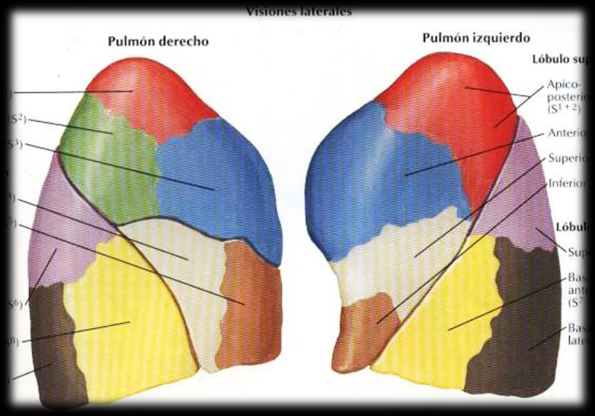

ClinicusMed · Dossiê Clinicus — Padrão de Excelência
A distribuição bronquial lobar permite individualizar, dentro de cada lóbulo, unidades ainda menores e mais precisas: os segmentos broncopulmonares.
| Pulmão | Lóbulos | Fisuras |
|---|---|---|
| Direito | 3 (superior, médio, inferior) | 2 (oblíqua + horizontal) |
| Esquerdo | 2 (superior, inferior) | 1 (oblíqua) |
O segmento pulmonar é a menor unidade anatômica e funcional independente do pulmão, definida por 3 características:
| Característica | Descrição |
|---|---|
| Raiz broncopulmonar | Cada segmento tem seu próprio brônquio segmentário + artéria homóloga (que o acompanha) |
| Forma piramidal | Base voltada para a periferia (pleura); vértice voltado para o hilio |
| Drenagem venosa | As veias percorrem a PERIFERIA do segmento (diferente da artéria e do brônquio, que ficam centrais) |
Repare no detalhe mais cobrado em prova: a veia segmentar corre pela periferia (na fronteira entre 2 segmentos vizinhos), enquanto a artéria e o brônquio correm centralmente, acompanhando-se um ao outro dentro do mesmo segmento. É esse arranjo — brônquio+artéria no centro, veia na periferia — que permite ao cirurgião "descolar" um segmento inteiro (segmentectomia) preservando os segmentos vizinhos, ligando a veia periférica compartilhada por último.

| Lóbulo | Segmentos (nomenclatura numérica) |
|---|---|
| Superior | Apical (SI), anterior (SII), posterior (SIII) |
| Médio | Lateral (SIV), medial (SV) |
| Inferior | Superior (SVI), basal medial/cardíaco (SVII), basal anterior (SVIII), basal lateral (SIX), basal posterior (SX) |
| Lóbulo | Segmentos (nomenclatura numérica) |
|---|---|
| Superior | Apicoposterior (SI-SII), anterior (SIII), lingular superior (SIV), lingular inferior (SV) |
| Inferior | Superior (SVI), basal medial/cardíaco (SVII), basal anterior (SVIII), basal lateral (SIX), basal posterior (SX) |
Pensa no pulmão esquerdo como uma versão "compactada" do direito: onde o direito separa apical/posterior/lateral/medial em 4 segmentos distintos (2 no superior + 2 no médio), o esquerdo funde apical+posterior em 1 (apicoposterior) e substitui o lóbulo médio inteiro pela "língula" (superior+inferior) — que fica dentro do próprio lóbulo superior esquerdo. No fim, os 2 pulmões somam nomenclatura numérica quase idêntica (SI a SX), só que agrupada de formas diferentes.

Dentro de cada segmento broncopulmonar, o parênquima se subdivide progressivamente em unidades cada vez menores: os lobulillos pulmonares, formados por conjuntos de alvéolos pulmonares — a unidade funcional da hematose (troca gasosa).
| Estrutura | Ordem/Calibre |
|---|---|
| Bronquio principal | 1ª ordem |
| Bronquios lobares | 2ª ordem |
| Bronquios segmentários | 3ª ordem |
| Bronquíolo | Sem cartilagem, diâmetro <1 mm |
Cada bronquíolo lobulillar emite 6 bronquíolos terminais, que originam os bronquíolos respiratórios. Estes, por sua vez, possuem alvéolos simples, que se expandem em átrios alveolares, conduzindo aos sacos alveolares — em cujas paredes se encontram os alvéolos pulmonares propriamente ditos.
O tabique interlobulillar separa os lobulillos pulmonares entre si. Apresenta poros que permitem a comunicação aérea interalveolar e interlobulillar: os poros septais de Kohn.
A artéria pulmonar acompanha fielmente as divisões do árvore brônquico, seguindo a mesma lógica de ramificação progressiva:
| Segmento vascular | Característica |
|---|---|
| Arteríola | Muscular e elástica |
| Precapilar | Desaparece o armazón contrátil, mas ainda não há contato direto com a parede alveolar |
| Capilar | Em contato direto com os alvéolos, apresentando apenas endotélio — formando a rede capilar |
O sangue, após passar pela rede capilar perialveolar, é coletado por uma rede organizada de vênulas e veias, com origem dupla — pleural e brônquica:
| Estrutura | Descrição |
|---|---|
| Capilares venosos | Início da drenagem, diretamente da rede perialveolar |
| Vênulas interlobulillares | De origem pleural e brônquica |
| Tabiques intersegmentários | Coletores voluminosos, na região subpleural |
As artérias bronquiais formam redes capilares submucosas, conectadas por arterias anastomóticas. O destino do sangue venoso bronquial depende de sua origem:
| Origem do sangue venoso | Destino |
|---|---|
| Proximal | Drena para a grande circulação (veias sistêmicas) |
| Distal | Drena para as veias pulmonares |
A comunicação entre as artérias bronquiais e as artérias pulmonares se dá pelas artérias de detenção (Von Haayek) — já vistas no Cap. 17, mas essenciais para entender a distribuição vascular completa a nível segmentar/lobulillar.
| Via linfática | Descrição |
|---|---|
| Peribronquial | Acompanha os brônquios |
| Periarterial/perivenosa | Acompanha os vasos sanguíneos |
| Rede e vias subpleurais | Na periferia, junto à pleura visceral |
A sensibilidade e a motricidade bronquiais, assim como a vasomotricidade intrapulmonar, dependem de uma rede nervosa densa, que pode se estender até a entrada do alvéolo.
Um caso que ilustra por que a anatomia segmentar do pulmão — e não apenas a lobar — é a base do planejamento cirúrgico moderno em oncologia torácica.
A Clinicus selecionou este conteúdo para complementar seu estudo. Não substitui a leitura do resumo — o resumo ensina, o vídeo reforça.
Carregando recomendações...
O sistema guarda, no seu navegador, quais cards você já sabe bem e quais precisam voltar mais cedo — cada vez que você avalia um card, ele recalcula quando ele deve voltar.
10 questões, do mais básico ao mais puxado. Escolhe uma alternativa, depois clica em "Ver comentário completo" — vale a pena ler até quando você acerta, porque o comentário explica cada alternativa, não só a certa.